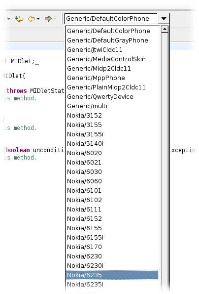

| You can easily switch your target device just by selecting the desired one from the device dropdown box at the top of each Polish Editor. |  |
| Run or debug your application just by rightclicking your project and selecting "Debug As... J2ME Polish MIDlet" or "Run As... J2ME Polish MIDlet". The project will then be build for your current target device and the appropriate emulator will be started. |
|
| The Polish Editor highlights preprocessing statements for you along with any included Java syntax elements. This helps you to understand the code much better. To open your Java source code with the Polish Editor, please rightclick the Java file and chose "Open With > Polish Editor". |

|
| The occurences marker helps you to overview complex preprocessing structures much easier. |
| The Polish Editor autocompletes your preprocessing directives and preprocessing variables/symbols when you press Control-Space within a directive. You will see all variables and symbols supported by all of your target devices - also you will see the values of the variables for your current target device. |

<%include end.txt %>